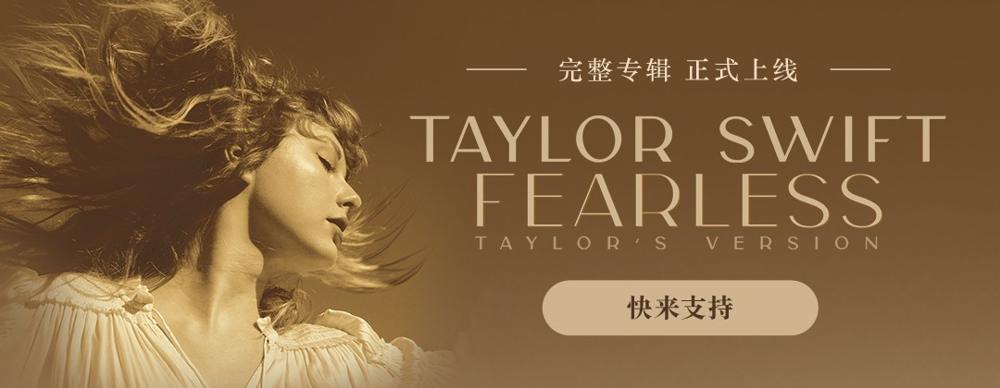
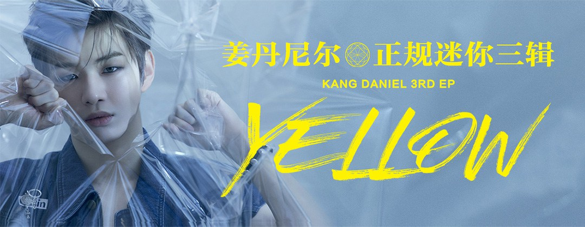

<!DOCTYPE html>
<html lang="en">
<head>
  <meta charset="UTF-8">
  <meta http-equiv="X-UA-Compatible" content="IE=edge">
  <meta name="viewport" content="width=device-width, initial-scale=1.0">
  <link rel="stylesheet" href="./banners.css">
  <title>carousel</title>
</head>
<body>

  <!-- 容器 -->
  <div class="container">
    <!-- 高斯模糊背景图 -->
    <div class="bg"></div>
    <!-- 轮播图界面 -->
    <section class="banners">
      <!-- 轮播的图片 -->
      <div class="piture">
        <!-- 根据数组动态生成 -->
        <!-- 
  
        
        
        
        
         -->
  
      </div>
      <!-- 小圆圈 -->
      <div class="circle">
        <!-- 根据数组动态生成 -->
        <!-- <span class="circle-item"></span>
        <span class="circle-item"></span>
        <span class="circle-item"></span> -->
  
      </div>
      <!-- 左右箭头 -->
      <span class="arrow left-arrow"></span>
      <span class="arrow right-arrow"></span>
    </section>
  </div>

  <script>
    const images = [
      {
        imageUrl: './images/1.jpg',
      },
      {
        imageUrl: './images/2.jpg',
      },
      {
        imageUrl: './images/3.jpg',
      }
    ];

    // 获取所有的dom元素
    const Container = document.getElementsByClassName('container')[0];
    const Bg = document.getElementsByClassName('bg')[0];
    const Banners = document.getElementsByClassName('banners')[0];
    const Piture = document.getElementsByClassName('piture')[0];
    const Circle = document.getElementsByClassName('circle')[0];
    const LeftArrow = document.getElementsByClassName('left-arrow')[0];
    const RightArrow = document.getElementsByClassName('right-arrow')[0];


    /*
      定时器统一2000ms
        1. piture能自动由左向右轮播
          - 自动开启定时器，hover时消除

        2. arrow点击左右箭头，切换图片
        3. circle点击跳转图片
    */
    // *通过currentIndex来控制当前展示的图片对应数组下标
    let currentIndex = 1;
    let RotateImgTimer = null;
    let TransitionKey = true;

    // 动态生成图片标签和圆圈标签
    function init() {
      
      var firstImg = document.createElement('img');
      firstImg.setAttribute('src',images[images.length - 1].imageUrl);
      firstImg.setAttribute('alt',images.length - 1)

      var lastImg = document.createElement('img');
      lastImg.setAttribute('src',images[0].imageUrl);
      lastImg.setAttribute('alt',0); 
      Piture.appendChild(firstImg);

      for(var i = 0; i < images.length; i ++) {
        // img:  3 1 2 3 1 
        var oImg = document.createElement('img');
        oImg.setAttribute('src',images[i].imageUrl);
        oImg.setAttribute('alt',i + 1);
        // console.log(oImg)
        Piture.appendChild(oImg);

        // 1 2 3
        var oSpan = document.createElement('span');
        oSpan.setAttribute('class','circle-item');
        oSpan.setAttribute('data-index',i + 1);

        if(i === 0) oSpan.setAttribute('class','circle-item actived');
        // console.log(oSpan)
        Circle.appendChild(oSpan);

      }
      Piture.appendChild(lastImg);

    }


    // 排它思想动态添加actived
    function Actived(nextIndex) {
      // 排它思想
      for(var i = 0; i < images.length; i ++) {
        Circle.children[i].setAttribute('class','circle-item');
      }
      Circle.children[nextIndex].setAttribute('class','circle-item actived');
    }

    // 滚动到指定的图片对应的数组下标
    function Rotate(nextIndex) {

      if (nextIndex >=0 && nextIndex < 5) {
        TransitionKey = false;
        Bg.style.backgroundImage = `url(./images/b_${nextIndex === 0 ? 3 : (nextIndex === 4 ? 1 : nextIndex)}.jpg)`;
      /*
            nextIndex
             0
             1
        1 -> 2 
        2 -> 3
        3 -> 4
      */
        // 淡入淡出轮播
        // Piture.style.transition = 'opacity 1s';
        // Piture.style.opacity = '0.2';

        // 无缝轮播
        Piture.style.transition = 'transform 1s';
        const rotateDistance = -732.85 * nextIndex;
        console.log(new Date().getSeconds(),nextIndex,`translateX(${rotateDistance}px)`);
        Piture.style.transform = `translateX(${rotateDistance}px)`;
       
        // Actived参数是images数组中的下标
        // 0 1 2
        if (nextIndex === 0) {
          Actived(images.length - 1);  
          // currentIndex = 3;
        } else if (nextIndex === 4) {
          Actived(0);
          // currentIndex = 1;
        } else {
          Actived(nextIndex - 1);

        }

      }

    }
    
    // 开启自动播放定时器
    function autoRotate() {
      RotateImgTimer = setInterval(() => {
        // 1. 通过定时器实现自动滚动图片 并改变圆点的类名
        Rotate(++ currentIndex);

      },2000);
    }

    window.addEventListener('transitionend',() => {
      // 淡入淡出轮播
      // console.log('transitionend: ',currentIndex,Piture.style.opacity);
      // Piture.style.opacity = '1';
      // const rotateDistance = -732.85 * currentIndex;
      // console.log(new Date().getSeconds(),currentIndex,`translateX(${rotateDistance}px)`);
      // Piture.style.transform = `translateX(${rotateDistance}px)`;

      if(currentIndex === 4) {
        // 4(展示的是1),立即跳回1
        console.log(new Date().getSeconds(),'我是立刻跳回去的,你看不到我~~');
        Piture.style.transition = '';
        Piture.style.transform = `translateX(${-732.85*1}px)`;
        currentIndex = 1;
        
      } else if(currentIndex === 0) {
        // 0(展示的是3),立即跳回3
        console.log(new Date().getSeconds(),'我是立刻跳回去的,你看不到我~~');
        Piture.style.transition = '';
        Piture.style.transform = `translateX(${-732.85*3}px)`;
        currentIndex = 3;
        
      }
      TransitionKey = true;

    })    

    /*
        index:  0  1  2  3  4
        image:  3  1  2  3  1
    */
    window.addEventListener('load',(e) => {

      /*
        1. 图片容器第一个元素添加需要展示的最后一张图片, 最后一个元素添加需要展示的第一张图片
        2. 根据图像数组动态生成图片和圆圈的标签
        3. 给圆圈的父元素绑定点击事件,通过事件委托修改它的类名
        4. 绑定左右箭头点击滚动
      */
      init();
      Circle.onclick = (e) => {
        // console.log(e.target.getAttribute('data-index'))
        const nextIndex = parseInt(e.target.getAttribute('data-index'));
        // console.log('切换:',currentIndex,' -> ',nextIndex);
        if(nextIndex && nextIndex !== currentIndex) {
          console.log('切换:',currentIndex,' -> ',nextIndex);
          Rotate(nextIndex);
          currentIndex = nextIndex;

        }
      }
      LeftArrow.onclick = (e) => {
        if(currentIndex > 0 || TransitionKey) {
          Rotate(--currentIndex);
        } else {
          console.log('transition还没end呢!');
        }

      }
      RightArrow.onclick = (e) => {
        if(currentIndex < 4 || TransitionKey) {
          Rotate(++currentIndex);
        } else {
          console.log('transition还没end呢!');
        }

      }


      /*  
        5. 设置定时器
            定时器的时长必须大于1000ms,
            因为transitionend事件处理1000ms后进入宏任务队列
      */
      autoRotate();

      /*
        6. 鼠标进入容器,清除定时器
        7. 鼠标移出容器,开启定时器
      */
      Container.onmouseenter = (e) => {
        console.log('mouseenter: ',RotateImgTimer);
        clearInterval(RotateImgTimer);
      }
      Container.onmouseleave = (e) => {
        console.log('mouseleave: ',RotateImgTimer);
        autoRotate();
      }

    })
  


  </script>

  
</body>
</html>